Deseti dan, Nju Delhi: Rođendan
Išli smo peške do metro stanice. Metro je kao i bilo gde drugde. Dipeš, naš lokalac što uvek ide sa nama, naš dobri duh Dipeš, nam je kupio karte. Čitala sam da je baš problem npr. za vozne karte da se kupe. Ne možeš ako nisi lokalac. A onda ti se nakače prevaranti sa nekim agencijama da ti odrade i bude baš stresno.
Stigosmo pred prelep hram Akshardan, ali je bio toliko daleko od ograde da se uopšte nije mogao slikati. Moje tuge. A on je prekrasan: staza od palmi, isklesani slonovi i ko zna šta još. Interesantno mi je što sam u fontani videla zlatne otiske Budinih stopala, kao i na vratima. Unutra ogroman zlatan Buda, drago kamenje... Maja me gleda i zavitlava: “hvataš kadar za slikanje”. Da, ali samo u svojoj glavi. Nadam se da neće izlapiti. Tu smo se opustile, pa u hladu jele i sladoled koji je bio odličan. Jedan lep moment opuštanja sa grupicom.
Posle toga smo imale slobodno vreme. Mi, žene u najboljim godinama, dogovorile smo se da idemo do starog grada Delhija, Chandi Chowka, gde se prodaju odeća i začini. Uz vožnju kroz razne ulice i pijace stigosmo. One su gledale robu, a ja ljude na ulicama.
U neko doba su se poplašile da neće stići da pazare sve što su planirale i odlučile da je bolje da se vrate u naš kraj gde znaju gde je šta. Začini ih više nisu zanimali. Ja sam bila srećna što imam svoj “me time”, pa sam se uputila sama. Bogami, nije bilo blizu. Sreća da nisu krenule. Skrenula sam negde i onda se menja scenografija. Sve više džakova, što na glavama ljudi, što na ulici. Našim energetičarima u firmi bi bilo interesantno da vide ove snopove kablova po ulicama. Ali bilo je baš živopisno. Milion vrsta urmi, začina. Svašta bih tu probala, ali se bojim problema sa stomakom. Tuk-tukovi su nestali sa ulica, ostale su samo rikše. Nekako sam našla jednu rikšu na motor jer ne znam kako bi neko pedalao biciklom do hotela koji je baš daleko. Dovela me je do naše oblasti (imala sam uredno visit kartu hotela, a i u Google Maps obeležen hotel pa sam mogla da pratim kuda me voza, što mi je značilo jer je delovao nesiguran i pitao druge vozače usput). U Delhiju, koji je stvarno ogroman (oko 1500 km²), ne bi valjalo da je krenuo na pogrešnu stranu. Najmnogoljudniji posle Tokija – 33 miliona stanovnika i ko zna koliko još njih nepopisanih. Uglavnom, u našoj oblasti me predao drugoj rikši na biciklu i ja sam stigla srećno kući.
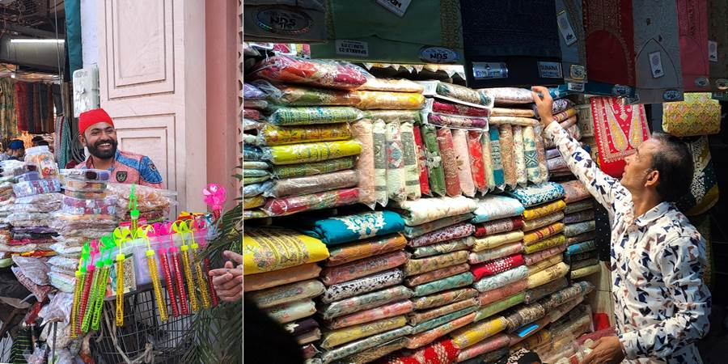
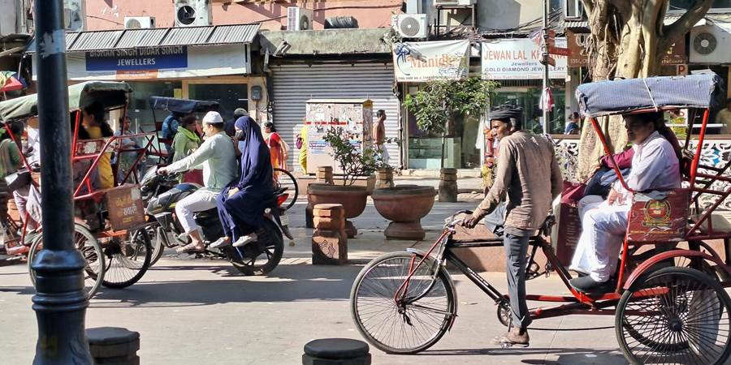
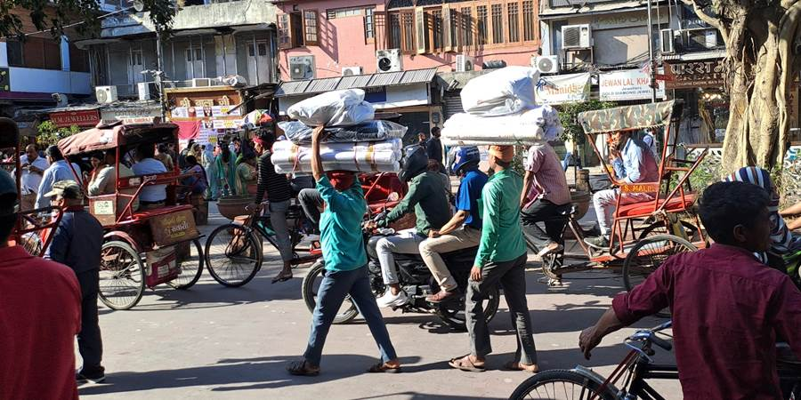
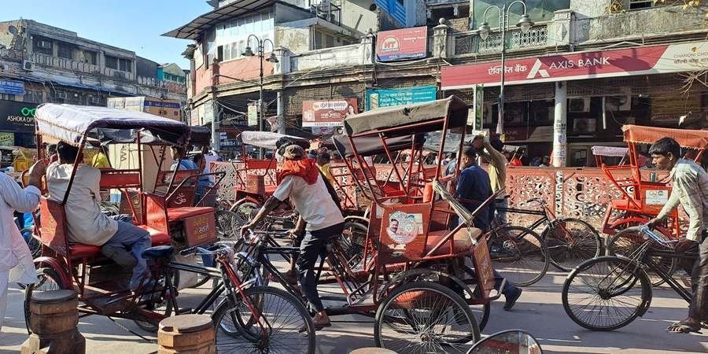
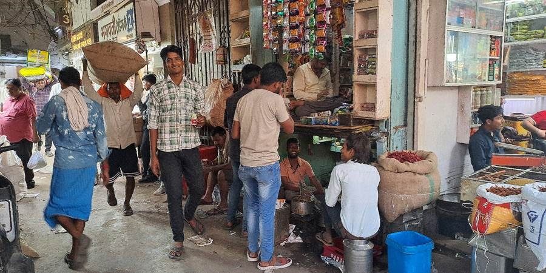
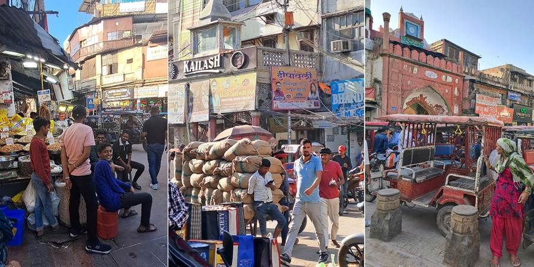
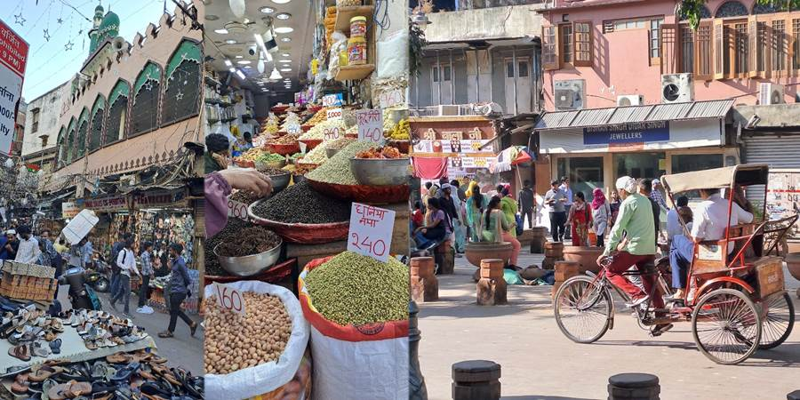
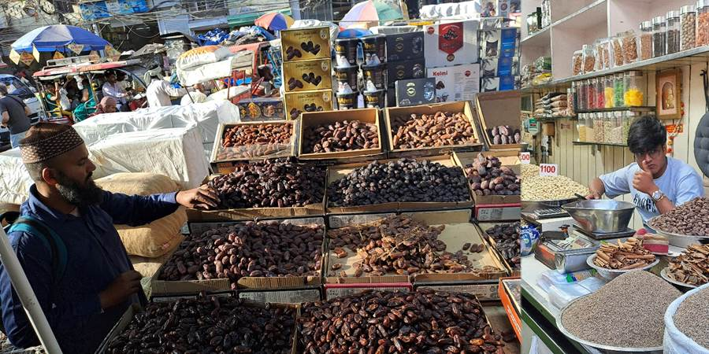
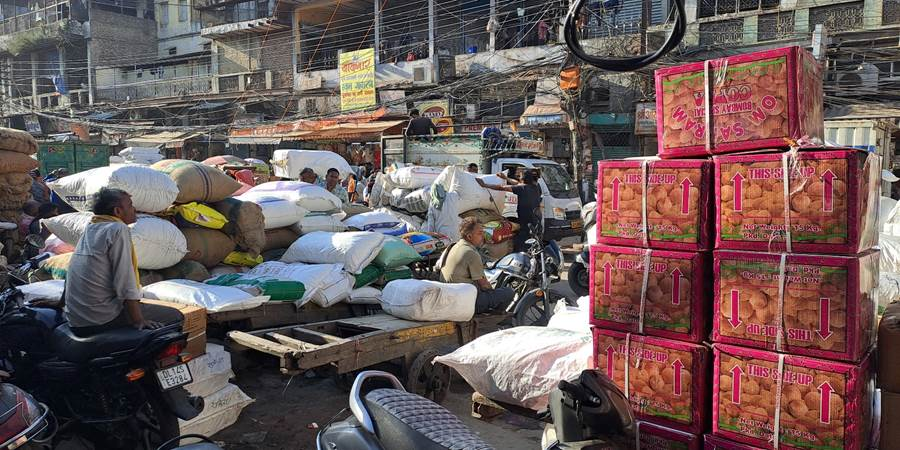
Uveče, večera u našem Exoticu. Još i proslava Jovaninog 30. rođendana. Mladi su uspeli da joj kupe tortu i mini-poklone. Baš se iznenadila i obradovala. Puštali su nam naše pesme – Kalašnjikov. Baš smo se izigrale. Pitao me jedan Indus da odaberem pesmu i ja odaberem onu iz autobusa: “da li si možda ikada mene volela kao tebe ja”. Kad su poskakale, pridružili su nam se i Indusi i kosooki u restoranu.
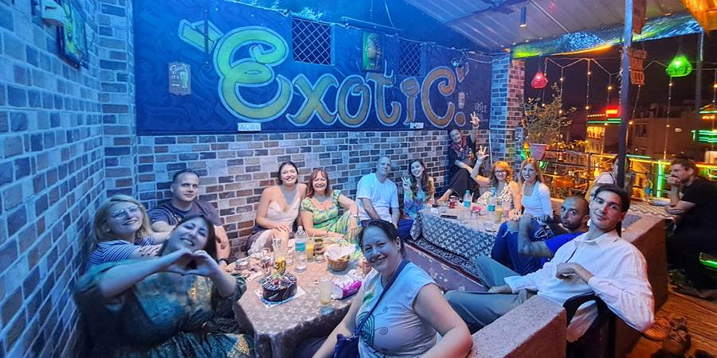
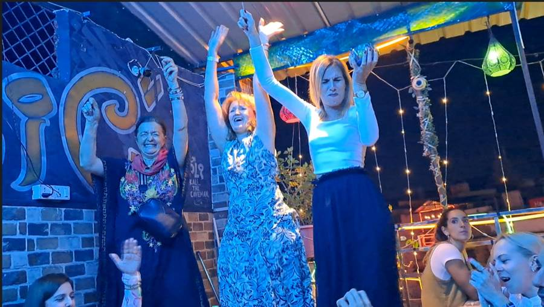
Jedanaesti dan kući: I tako...
Sa proslave direkt na aerodrom. U 2h ujutru smo krenuli.
Poželela sam sedište pored prozora aviona i dobila, na oba leta. Srećna, volim da gledam kroz prozor.
Nismo išle u Istanbul nego smo se šećkale po aerodromu. Planirala sam da odem do nekog mesta na moru, 15 minuta od aerodroma, ali su rekli Aleksa i Milena da taksi tamo nije hteo da dođe po njih i da su se jedva vratile, pa smo odustale.
Od Turkish Airlines smo imali besplatan ručak jer je dugo presedanje. Organizuju oni i obilazak Istanbula za džabe, ali nam se termini nisu poklopili.
Našli smo i deo za odmor sa ležaljkama.
Nikoli je stigla nova grupa, prosek godina 80. Poneli su rakiju od kuće jer ovde zvanično nema alkohola, mada su naši mladi našli.
Slikali su se na Agri Fort, sa vodičem koji je bio zaljubljen, i poslali nam slike. Nama je bilo milo da vidimo.
Nadam se da ćemo se opet negde, nekada ponovo sresti. Mi iz naše trinaestočlane grupice plus Dipeš, 14 dece od Nikole o kojima je brinuo, kao ona jadna žena što je umrla na porođaju svog 14. deteta. Nikola je nas preživeo.
Šta se radi u Indiji? U tri reči, kao u onom filmu:
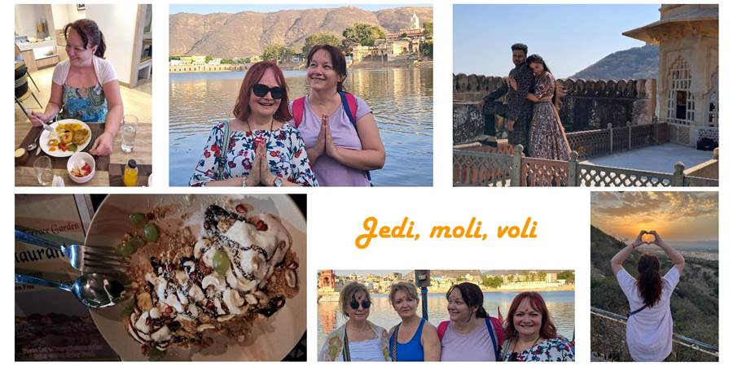
Kako su nas slikali:
Savet: ograničena je težina kofera za avion na 30 kg, ali nema ograničenja na broj kofera. Neko je kupio ogromnu torbu-krmaču i katanac i doneo pregršt lepih stvari. Eto ideje.
P.S. Uopšte nije bilo toliko prljavo i smrdljivo kao što sam očekivala. Kod znamenitosti je besprekorno čisto, a i ostale ulice se čiste svakodnevno.
Kako reagujem na komentare: "Fuuj, tamo je tako prljavo, ja nikad ne bih išla." Gledam u čudu jer Indija je toliko više od toga. To je kao da nekom pokažeš bebu u pelenama, pa kaže: "Fuuj, pelene, smrdljivo." Ti kažeš: "Pomiriši kosicu, vidi osmeh, slušaj kako guče."
Ne propustite sledeću avanturu!
Kad Sandra krene u novi kraj sveta, vaš inbox prvi sazna. Prijavite se i stižu vam sve nove priče mejlom.